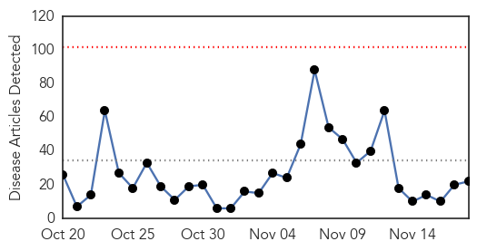
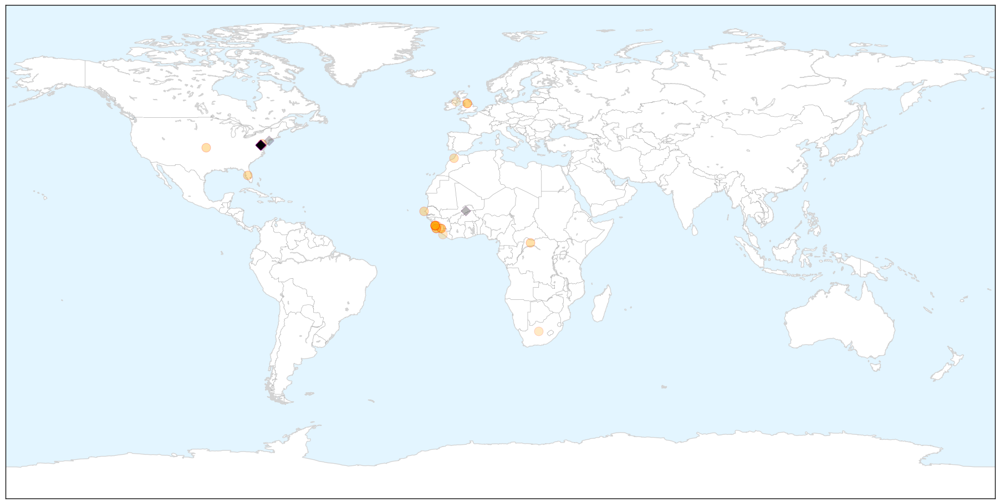
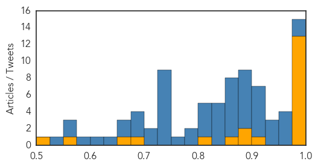
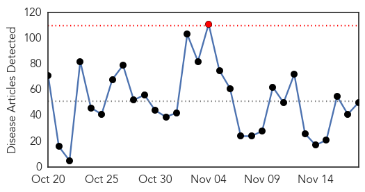
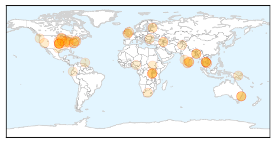

Ebola
30-Day Web Trend
0 alerts, 0 warnings

30-Day Twitter Trend
30 alerts, 0 warnings

Article Locations

X

Article Confidences
Top Articles:
- 1.000
- Guinea may soon be declared free of Ebola virus
- 1.000
- After 2 Years , Finally end of Ebola in Guinea
- 0.999
- Guinea Enters Countdown Toward Official Declaration Of The African Nation Being Ebola-Free : LIFE : Tech Times
- 0.999
- Guinea, last nation with ebola, may soon be declared free of virus
- 0.999
- Anesthetic Implications of Ebola Patient Management: A Review of the Literature and Policies.
- 0.999
- Last known Ebola case in Guinea recovers
- 0.998
- Guinea, last nation with Ebola, may soon be declared free of virus
- 0.998
- Guinea Counts Down to End of Ebola
- 0.997
- NIH to test Ebola vaccine candidate in humans -
- 0.987
- Guinea begins countdown to being Ebola-free
- 0.986
- Guinea’s last Ebola patient released from care
- 0.981
- GlaxoSmithKline Ebola vaccine shows safety in PhI
- 0.978
- Ebola vaccines trial starts in Liberia
- 0.903
- Exhibition documents army nursing role in ebola outbreak
- 0.898
- From Ebola boots to terror targets, Imperial War Museum explores modern military
- 0.878
- Royal Air Maroc Honored for Serving Liberia During Ebola Epidemic
- 0.863
- Chief Medical Officer Expresses MOHS Readiness to improve Status of Emergency Obstetric and Newborn Care in Sierra Leone.
- 0.809
- Head of Civil Service, Dr. Ernest Surur, Calls for Accurate Human Resource Data Base for effective planning and service delivery.
- 0.680
- EBOLA VIRUS IS GONE, BUT ENEMIES OF PEACE AND DEVELOPMENT ARE ONIT AGAIN TO INCITE VIOLENCE`
- 0.666
- 'Over 4,000 Health Workers For Liberia' -MOH Comm. Director Reveals
- 0.551
- Orientation for M & E Officers and Data Clerks on Data Collection Forms
- 0.513
- Fighting Extremes: From Ebola to ISIS.
Top Tweets:
- 0.979
- Ebola: Last Known Ebola Patient Cured In Guinea? - https://t.co/sZhNfZPvUT ebola
- 0.977
- West of England: Update on Ebola virus outbreak - https://t.co/orcP3RoMmP ebola
- 0.967
- Minnesota has a Ebola treatment center to treat west Africans with Ebola Minnesota home to ebola center
- 0.957
- Last known Ebola patient in West Africa recovers - https://t.co/nKbkHZSr1l ebola
- 0.952
- Chernor Bah's book offers glimpse into the Ebola outbreak in West Africa - https://t.co/2Naxf4kPC0 ebola
- 0.950
- Guinea Clears Last Ebola Patient Of Disease Begins 42-Day Countdown To Ending Epidemic - https://t.co/Km8enT0hZT ebola
- 0.938
- After 11000 deaths Ebola outbreak could finally be over - https://t.co/JufK1PsUGD ebola
- 0.928
- News in the Humanosphere: No known cases of Ebola in Africa - https://t.co/b3u3sTwAmP ebola
- 0.928
- 'Bye Bye' to Ebola Sierra Leone is celebrating - https://t.co/f2GsCQ1J7X ebola
- 0.923
- Last Known Ebola Patient Tests Negative - https://t.co/lplnwai3Sc ebola
- 0.920
- Helping 15000 ebola survivors is top priority: UN ebola chief - https://t.co/yFb02elMUU ebola
- 0.919
- State Health Department no longer tracking Africa visitors for Ebola - https://t.co/8W7LEpFDPo ebola
- 0.917
- Surveillance for Ebola Virus in Wildlife Thailand - https://t.co/7DRaR1rSlP ebola
- 0.910
- Guinea's last Ebola patient released from medical care - https://t.co/nuo9w1kIKZ ebola
- 0.906
- guinea may soon declared free of ebola virus - https://t.co/eEOzTYGMeU ebola
- 0.900
- Ebola Bulletin A national strategy for Guinean Ebola survivors - https://t.co/68BciOhfVQ ebola
- 0.892
- The Last Known Ebola Patient in Africa Has Recovered - https://t.co/ccqTHVtDYX ebola
- 0.891
- Nach Ebola: Überlebende kämpfen mit Folgeerkrankungen - Deutsche Welle https://t.co/dINZwzC7Dj ebola EVD
- 0.891
- Helping 15000 ebola survivors is top priority: UN ebola chief - Toronto Star https://t.co/1QKHg12ISN ebola EVD
- 0.890
- Kasar Guinea Ta Kusa Fita daga Cutar Ebola - https://t.co/nraVP5lI10 ebola
- 0.885
- Watch the People of Sierra Leone Sing and Dance as Country Beats Ebola - TIME https://t.co/S11kdOni1w ebola EVD
- 0.876
- Last known Ebola case in Guinea recovers - https://t.co/ZFY2cWYdPd ebola
- 0.872
- Ebola Vaccine Stimulates Immune Response - https://t.co/Hw2Vpp4IEi ebola
- 0.871
- Watch the People of Sierra Leone Sing and Dance as Country Beats Ebola - https://t.co/rSUF53nCKW ebola
- 0.871
- Emergency Appeal Operation Update - Ebola Virus Disease Emergency Appeals (Guinea Liberia ...... https://t.co/OLzutFKkqa
- 0.868
- Nach Ebola: Überlebende kämpfen mit Folgeerkrankungen - https://t.co/bk3aXRcm7u ebola
- 0.865
- Guinea's last Ebola patient recovers in Conakry - https://t.co/q6f8GJvcLZ ebola
- 0.863
- FDA-approved drug protects mice from Ebola - Medical Xpress https://t.co/Tt9xZtI7Pj ebola EVD
- 0.852
- An Ebola-Free Sierra Leone Marks a Moment for Celebration - https://t.co/mpN9vbQIYF ebola
- 0.849
- GlaxoSmithKline Ebola vaccine shows safety in PhI - https://t.co/TVSf0454AC ebola
- 0.849
- Ebola epidemic close to being declared over - https://t.co/y8I4OWwzYt ebola
- 0.847
- Study finds that Ebola vaccine is safe and stimulates strong immune response - Medical Xpress https://t.co/W83P6HIBBe ebola EVD
- 0.832
- Baby girl last known Ebola patient in Africa recovers - https://t.co/dTNCyHiKxw ebola
- 0.832
- After Nearly 2 Years Guinea Begins Countdown To End Of Ebola Epidemic « » The Henry J ... - https://t.co/BskpdhRePZ ebola
- 0.815
- Profectus BioSciences Ebola vaccine is effective animal study shows - https://t.co/8dfHEuaHOY ebola
- 0.814
- Profectus shares preclinical data for vaccine against Ebola and Marburg - https://t.co/mlgPTYzeoL ebola
- 0.811
- Gamma interferon may have potential to prevent Ebola infection - https://t.co/Ao5TaRyeBP ebola
- 0.804
- Guinea Enters Countdown Toward Official Declaration Of The African Nation Being Ebola-Free - https://t.co/JhCvwBAcTm ebola
- 0.795
- PICS bags aided farmers in Ebola-stricken Sierra Leone - https://t.co/9qm7Hju15n ebola
- 0.778
- Guinea begins countdown to end of Ebola transmission - https://t.co/5RpMDyDHwu ebola
- 0.760
- Profectus BioSciences Ebola vaccine is effective animal study shows - Baltimore Sun https://t.co/0ppIypQKxY ebola EVD
- 0.750
- Guinea's Ebola baby cured - https://t.co/ITE12YoKXo ebola
- 0.749
- Last Ebola Patient a Baby Girl Named Nubia Recovers - https://t.co/60lwvihFuD ebola
- 0.740
- Ebola is almost gone but the viral threat remains - https://t.co/R5LqhGF38T ebola
- 0.737
- FDA-approved drug protects mice from Ebola - https://t.co/hIVt0gvmfK ebola
- 0.736
- Guinea begins countdown to being Ebola-free - https://t.co/y5L2EDxiQA ebola
- 0.736
- Guinea begins countdown to being Ebola-free - https://t.co/V27vSG1GHP ebola
- 0.734
- Ebola leaves its survivors on their knees - https://t.co/ZpO9jHUcte ebola
- 0.725
- Guinea Counts Down to End of Ebola - https://t.co/tMZZQo8CdJ ebola
- 0.725
- Guinea Counts Down to End of Ebola - https://t.co/TqIhJ8YT3N ebola
Showing top 50 tweets...
Unknown
30-Day Web Trend
1 alerts, 0 warnings

30-Day Twitter Trend
0 alerts, 0 warnings

Article Locations

Article Confidences

Top Articles:
- 0.981
- Two avian flu outbreaks in northwest, National, Phnom Penh Post
- 0.976
- More Than 2,000 Ducks Dead After Latest Bird Flu Outbreak
- 0.970
- Sickness outbreak that affected 56 at Porthcawl bar confirmed as norovirus
- 0.958
- Minding Health Matters: MOH responds to increase in bacterial illnesses - Health
- 0.942
- H5N1 bird flu outbreak recorded in northwest Cambodia
- 0.935
- Virus could take bite out of mozzies
- 0.928
- Steps afoot to prevent disease outbreak in TN; 55,000 screened
- 0.909
- Shigellosis Infection Cases Continue to Rise in Winnebago County
- 0.905
- Be prepared for flu, travel in wintery weather
- 0.900
- Steps afoot to prevent disease outbreak in Tamil Nadu; 55,000 people screened
- 0.898
- "Good" mozzie virus might hold key to fighting human disease
- 0.887
- Charlie Sheen is HIV positive, but what does ‘undetectable’ really mean?
- 0.868
- Local Petersburg providers prepare for flu season
- 0.866
- Bangladesh opposition leaders to hang for war crimes
- 0.816
- First Flu Deaths Reported in Iowa
- 0.773
- Charlie Sheen Has HIV: What It's Like to Live with the Virus
- 0.752
- Uber Offers Flu Shots from Nurses for $10
- 0.747
- Health content from National Hog Farmer
- 0.746
- Pet Dogs And Cats Pass Drug-Resistant Infections To Humans, Experts Warn : LIFE : Tech Times
- 0.733
- Guarding against the parovirus
- 0.694
- Dr. Andres Sanchez Now Accepts New Gum Disease Patients in Edina, MN for Revolutionary Laser Gum Surgery
- 0.677
- MSF treats 60 people wounded in grenade explosions
- 0.677
- Good Question: Are We Winning The War Against HIV
- 0.670
- Some facts about HIV in the United States
- 0.667
- Kenya : Elite UN Board calls for new approaches in dealing with looming water challenges
- 0.665
- O nouă cruciadă politică
- 0.662
- Illinois health departments urge patients to get flu shots
- 0.662
- UC Health alerting patients about leaked medical records
- 0.650
- Steps afoot to prevent disease outbreak in Tamil Nadu; 55,000 people screened
- 0.649
- Disease threatens PNG drought areas
- 0.626
- Uber to deliver help to sick during flu season
- 0.624
- World Antibiotics Awareness Week
- 0.602
- Rates of Syphilis, Gonorrhea and Chlamydia Are Rising
- 0.600
- Burundi: MSF treats 60 people wounded in grenade explosions
- 0.585
- Health Officials Concerned About More Cases of Syphilis In Oregon
- 0.582
- South Sudan: Dramatic increase in patients in Malakal’s UN site as living conditions jeopardise health of thousands
- 0.580
- Before Antibiotics, a Cut on Your Finger Could Kill You
- 0.566
- INFORMATION AND SERVICES IN GOA. Goa News, Goa Konkani News, Goa Sunaparant News, Goan Konakani News, Goa Video News, Goa Yellow Pages
- 0.564
- 200 WSU students being tested for TB
- 0.560
- Afghanistan Humanitarian Bulletin Issue 45
- 0.559
- Health Officials Report Shortage In FluMist « CBS Chicago
- 0.557
- Burundi: MSF treats 60 people wounded in grenade explosions
- 0.546
- St. George's University's Public Health Master's Program Receives Maximum Accreditation
- 0.534
- Most Tanks Across District Set to be Recharged
- 0.528
- Medical student Waldo Zamor delivers grand rounds on unfamiliar tropical disease
- 0.527
- 'Kissing bug' infections still a problem in Texas
- 0.506
- 45m at risk of bilharzia
- 0.505
- Chipotle E. coli Outbreak Numbers Fall from 50 to 37
- 0.504
- Majority of public confused over antibiotic resistance â' WHO survey - The New Times
- 0.504
- Ecuador and Belarus sign memorandum of understanding on health
Showing top 50 articles...
Top Tweets:
-
No tweets found for Nov 18, 2015